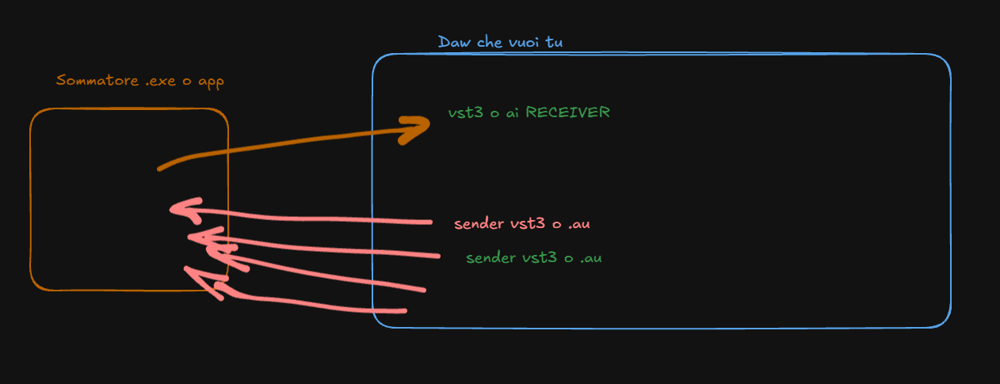

🎚️ sommacampagna plugin pack
ALPHA • NON STABILE • USA A TUO RISCHIO
📦 Download build:
versione prototipo con routing 16 IN / 2 OUT, BUS STRESS e griglia LED 4x4.
⬇️ WINDOWS (VST3)
⬇️ MACOS (VST3 + AU)
📦 versione standalone sommatore esterno piu' plugin di comunicazione con daw
⬇️ WINDOWS (ENGINE + SENDER/RECEIVER)
⬇️ MACOS UNIVERSAL (ENGINE + PLUGIN PACK)
versione prototipo con routing 16 IN / 2 OUT, BUS STRESS e griglia LED 4x4.
⬇️ WINDOWS (VST3)
⬇️ MACOS (VST3 + AU)
File Win:
sommacampagna-vst3-user-pack.zipFile macOS:
sommacampagna-osx-vst3-au.zip📦 versione standalone sommatore esterno piu' plugin di comunicazione con daw
⬇️ WINDOWS (ENGINE + SENDER/RECEIVER)
⬇️ MACOS UNIVERSAL (ENGINE + PLUGIN PACK)
File Win:
sommacampagna-external-windows-release.zipFile macOS universal:
sommacampagna-macos-2026-06-02.zip
🧪 Stato attuale:
- ✅ Build Windows VST3 pronta
- ✅ Build macOS VST3 + AU pronta
- ✅ Parametri base disponibili
- ✅ UI custom con meter LED 4x4
- ⚠️ Tuning DSP ancora in corso
🛸 Istruzioni lampo:
Windows:
1) Scarica lo zip Windows
2) Estrai
3) Copia in
4) Rescan in REAPER
macOS:
1) Scarica lo zip macOS
2) Estrai i bundle plugin
3) Copia VST3 in
4) Copia AU in
Windows:
1) Scarica lo zip Windows
2) Estrai
sommacampagna.vst33) Copia in
C:\Program Files\Common Files\VST34) Rescan in REAPER
macOS:
1) Scarica lo zip macOS
2) Estrai i bundle plugin
3) Copia VST3 in
/Library/Audio/Plug-Ins/VST34) Copia AU in
/Library/Audio/Plug-Ins/Components